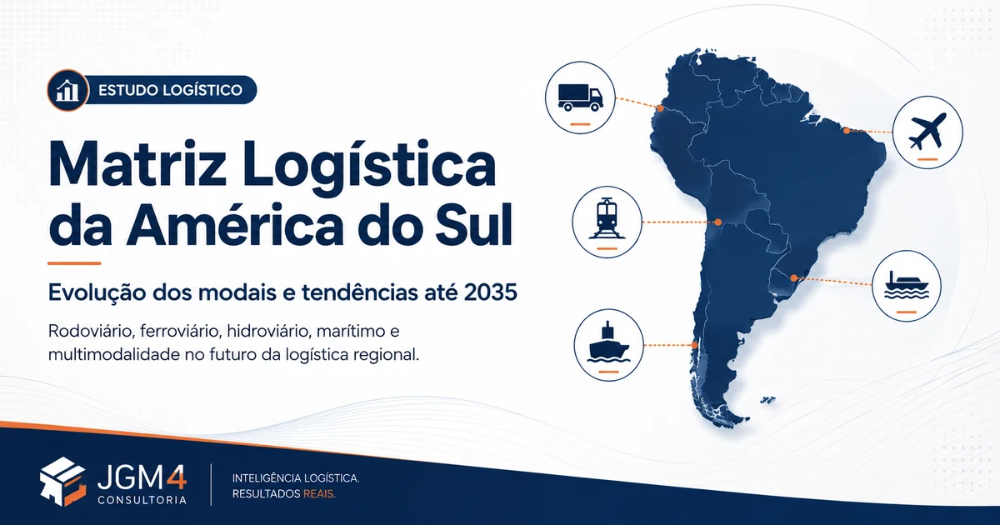

A América do Sul continua fortemente dependente do transporte rodoviário em sua distribuição terrestre e doméstica. Ferrovias, hidrovias, cabotagem e transporte marítimo ganham importância quando a carga percorre grandes distâncias, apresenta alto volume ou precisa alcançar mercados internacionais. O movimento mais relevante até 2035, porém, não será a vitória isolada de um modal: será a capacidade de conectá-los.
A diversidade geográfica impede uma única matriz continental. Países costeiros orientados à exportação, territórios sem saída para o mar, bacias navegáveis, cordilheiras e extensas zonas produtoras exigem combinações diferentes. Por isso, esta análise separa relevância atual, potencial futuro e qualidade das interfaces.
A América do Sul pode se tornar mais ferroviária, hidroviária e marítima sem deixar de ser rodoviária. O caminhão continuará sendo o elo que conecta praticamente todos os demais modais.
Principais modais de transporte da América do Sul
Cada modal resolve uma parte diferente do problema logístico. A escolha deve considerar volume, densidade, regularidade, distância, prazo, infraestrutura disponível, risco e custo total porta a porta.
Transporte rodoviário
Atende carga geral, fracionada, refrigerada, contêineres e praticamente qualquer fluxo com acesso viário.
- Vantagens:
- capilaridade, flexibilidade, frequência e porta a porta.
- Limitações:
- congestionamento, segurança, emissões, restrições urbanas e custo crescente em longas distâncias.
- Tendência:
- continuar dominante na coleta e última milha, com mais digitalização e integração a terminais.
Transporte ferroviário
É especialmente adequado a minérios, grãos, combustíveis, celulose, contêineres e fluxos densos e regulares.
- Vantagens:
- escala e eficiência em grandes volumes e longas distâncias.
- Limitações:
- alto investimento, rede limitada, interoperabilidade e necessidade de transbordo.
- Tendência:
- expansão seletiva em corredores de exportação e ligações com portos.
Transporte hidroviário
Move grãos, minérios, combustíveis, fertilizantes e contêineres em rios e sistemas navegáveis.
- Vantagens:
- grande capacidade por viagem e eficiência para cargas de baixo valor por tonelada.
- Limitações:
- navegabilidade, sazonalidade, dragagem, terminais e tempos mais longos.
- Tendência:
- maior uso de bacias estruturantes, com atenção à resiliência climática.
Transporte marítimo e cabotagem
O longo curso sustenta o comércio exterior; a cabotagem conecta portos dentro de um país.
- Vantagens:
- escala global e eficiência em rotas costeiras de grande volume.
- Limitações:
- dependência de portos, frequência, transbordo e acesso terrestre.
- Tendência:
- crescimento integrado a terminais interiores, ferrovia e rodovia.
Transporte aéreo
Serve produtos urgentes, perecíveis, farmacêuticos, eletrônicos e cargas de alto valor.
- Vantagens:
- velocidade e alcance em territórios remotos.
- Limitações:
- custo elevado, capacidade e restrições de peso e volume.
- Tendência:
- especialização, rastreabilidade e conexão com cadeias de alto valor.
Transporte dutoviário
Opera fluxos contínuos de petróleo, derivados, gás, minérios em polpa e produtos específicos.
- Vantagens:
- regularidade, automação e baixa interferência no tráfego.
- Limitações:
- rigidez de origem, destino e produto, além de alto investimento.
- Tendência:
- expansão condicionada a projetos energéticos, minerais e licenciamento.
Transporte multimodal
Combina dois ou mais modais em uma solução coordenada de origem a destino.
- Vantagens:
- usa cada modal onde ele é mais eficiente e amplia o alcance da rede.
- Limitações:
- interfaces, contratos, informação, documentação e sincronização.
- Tendência:
- ser o principal vetor de transformação logística até 2035.
Matriz Logística Estratégica da América do Sul — Atual x 2035
A tabela é uma leitura comparativa, não uma estatística oficial de participação. A avaliação utiliza escala estratégica de 1 a 5. Não representa participação percentual oficial de cada modal. 1 indica baixa relevância ou potencial; 5 indica relevância ou potencial muito alto.
| País | Rodoviário | Ferroviário | Hidroviário | Marítimo | Aéreo | Dutoviário | Intermodal |
|---|---|---|---|---|---|---|---|
| Brasil | 5→5 | 3→5 | 3→5 | 4→5 | 2→3 | 3→4 | 3→5 |
| Argentina | 5→5 | 3→5 | 4→5 | 4→5 | 2→3 | 3→4 | 3→5 |
| Chile | 5→5 | 2→4 | 1→1 | 5→5 | 2→3 | 3→4 | 3→5 |
| Peru | 5→5 | 2→4 | 2→3 | 5→5 | 2→3 | 2→3 | 3→5 |
| Colômbia | 5→5 | 2→4 | 2→4 | 5→5 | 3→4 | 3→4 | 3→5 |
| Paraguai | 4→4 | 1→2 | 5→5 | 1→1 | 1→2 | 1→2 | 3→5 |
| Uruguai | 4→4 | 2→4 | 4→5 | 4→5 | 1→2 | 1→2 | 3→5 |
| Bolívia | 5→5 | 3→4 | 3→5 | 1→1 | 2→3 | 4→4 | 3→5 |
| Equador | 5→5 | 1→2 | 1→2 | 5→5 | 3→4 | 3→3 | 3→4 |
| Venezuela | 4→4 | 1→2 | 2→3 | 4→5 | 2→3 | 5→5 | 2→4 |
| Guiana | 3→4 | 1→1 | 3→4 | 4→5 | 2→3 | 2→3 | 2→4 |
| Suriname | 3→4 | 1→1 | 3→4 | 4→5 | 2→3 | 2→3 | 2→4 |
A matriz deve ser revista quando projetos, marcos regulatórios ou condições operacionais mudarem. Ela orienta análise estratégica; não substitui estudo de viabilidade por rota e produto.
Como a logística sul-americana está mudando
O percurso principal tende a concentrar-se no modal mais eficiente, enquanto o caminhão assume as pontas e as conexões. Isso transforma uma viagem rodoviária longa em uma cadeia coordenada de trechos.
Modelo tradicional
- Indústria
- Caminhão
- Longa distância
- Cliente
Tendência multimodal
- Indústria
- Caminhão
- Terminal
- Ferrovia / hidrovia / cabotagem
- Terminal
- Caminhão
- CD / cliente
A mudança exige planejamento de horários, unidades de carga, documentação, disponibilidade de equipamentos, estoques em trânsito e contingências. A vantagem do trecho ferroviário ou aquaviário pode desaparecer se o transbordo for imprevisível.
Brasil: por que o transporte rodoviário continuará estratégico?
O caminhão continuará fundamental porque conecta uma rede territorial extensa a destinos pulverizados. Dimensão continental, capilaridade urbana, coleta, transferência entre instalações e atendimento porta a porta mantêm o modal rodoviário no centro da distribuição.
Mesmo quando ferrovia, hidrovia e cabotagem ganham espaço em cargas de longa distância e grande volume, a operação ainda precisa levar o produto da fábrica ao terminal e do terminal ao centro de distribuição ou cliente. Primeira e última milha, reposição urbana e conexão entre fábricas, CDs, portos e ferrovias continuam rodoviárias em grande parte dos fluxos.
O planejamento federal brasileiro até 2035 trabalha explicitamente com integração entre subsistemas rodoviário, ferroviário, aquaviário e aeroviário. Isso aponta para complementaridade: mais capacidade em modais de grande volume aumenta a necessidade de sincronização com o transporte rodoviário.
Principais corredores logísticos da América do Sul
Corredores importam mais do que médias nacionais. Uma mesma matriz pode comportar rotas altamente ferroviárias, outras essencialmente rodoviárias e eixos hidroviários decisivos.
Brasil e Argentina — escala e multimodalidade
Grandes territórios, produção agroindustrial e mineral, mercados internos relevantes e portos de exportação criam espaço para ferrovias, hidrovias e cabotagem. A rodovia permanece indispensável na formação dos lotes, nos acessos portuários e na distribuição. O ganho depende de terminais capazes de transferir carga sem espera excessiva.
Chile, Peru, Colômbia e Equador — corredores rodovia–porto
A geografia andina e a orientação ao Pacífico elevam o papel de portos e eixos rodoviários de acesso. Ferrovias podem avançar em corredores específicos, mas relevo, investimento e continuidade da rede limitam soluções universais. A eficiência do porto começa no agendamento e na confiabilidade do acesso terrestre.
Paraguai, Argentina, Bolívia, Uruguai e Brasil — eixo hidroviário Paraguai–Paraná
A Hidrovia Paraguai–Paraná forma um corredor fluvial internacional que conecta os cinco países da Bacia do Prata. Para Paraguai e Bolívia, sem litoral marítimo, a combinação entre rios, portos e acessos terrestres é especialmente estratégica. Navegabilidade, terminais, fronteiras e coordenação operacional condicionam sua confiabilidade.
7 tendências da logística sul-americana para a próxima década
Até 2035, competitividade logística deverá depender menos de um modal isolado e mais da qualidade da rede. Sete movimentos merecem atenção:
- Crescimento da multimodalidade. Corredores eficientes combinarão coleta rodoviária, terminal, percurso de grande capacidade e distribuição final.
- Expansão ferroviária. Novos investimentos tendem a se concentrar onde volume, regularidade e distância justificam infraestrutura dedicada.
- Maior utilização das hidrovias. Bacias navegáveis podem absorver granéis e contêineres, desde que navegabilidade e terminais ofereçam previsibilidade.
- Crescimento da cabotagem. Em países com longa costa, rotas marítimas domésticas podem complementar eixos terrestres congestionados.
- Digitalização das operações. Documentos, contratação, programação, prova de entrega e análise de custos migrarão para fluxos integrados.
- Rastreamento e integração de dados. Visibilidade ponta a ponta exigirá conciliar eventos de transportadoras, terminais, portos, TMS, WMS e ERP.
- Gestão inteligente de terminais, pátios e docas. Capacidade física só gera resultado quando chegadas, filas, recursos e tempos são coordenados.
O BID mantém iniciativa regional voltada a lacunas e gargalos de corredores eficientes na América do Sul. A CEPAL, por sua vez, defende que infraestrutura, transporte e logística sejam planejados de modo integrado, e não como políticas modais isoladas.
Mais multimodalidade significa mais pontos de transferência de carga
Cada mudança de modal cria uma interface operacional. É nela que horários, documentos, equipamentos e capacidade precisam convergir:
- Caminhão
- CD / terminal
- Ferrovia
- Terminal
- Caminhão
- Porto
Em cada ponto podem surgir:
- filas e espera de motoristas;
- congestionamento no pátio;
- atrasos de carga e descarga;
- falta de visibilidade;
- baixa produtividade de docas;
- pagamento de diárias;
- aumento do lead time;
- aumento do custo logístico.
O desafio não termina quando a carga chega ao destino. Muitas vezes, o custo está justamente no tempo em que o veículo permanece parado esperando para carregar ou descarregar.
Como uma consultoria logística pode preparar sua operação para essa transformação?
A primeira decisão não é escolher o modal; é entender o fluxo completo e o custo de cada interface. A JGM4 Consultoria pode apoiar empresas na análise de malha logística, custos de transporte, fretes, processos, armazenagem, WMS, TMS, produtividade, dimensionamento, gestão de transportadoras, indicadores, recebimento, expedição, melhoria de CDs e gestão de docas.
O trabalho deve comparar cenários com dados da operação: origem e destino, volume, frequência, nível de serviço, estoque em trânsito, transbordos, riscos e capacidade dos pontos de apoio. Veja também como funciona um diagnóstico logístico, a auditoria de fretes e a consultoria em gestão de estoques.
Quer entender onde estão os gargalos e oportunidades da sua operação logística?
Se o caminhão continua essencial, a gestão da doca também precisa evoluir
Não basta movimentar a carga mais rápido entre cidades. É preciso reduzir também o tempo perdido dentro da própria operação.
O Doca Certa é uma solução vinculada à JGM4 para organizar operações de recebimento e expedição. O sistema de agendamento de docas centraliza janelas, fornecedores, transportadoras, horários e docas, apoiando visibilidade, acompanhamento de veículos, controle do fluxo e melhor utilização da capacidade.
A tecnologia não substitui regras, dimensionamento e disciplina. Ela oferece uma base compartilhada para reduzir mensagens dispersas, conflitos de agenda e chegadas simultâneas. A página sobre gestão de docas e agendamento de entregas explica como preparar o processo.
Perguntas frequentes
Qual é o principal modal de transporte da América do Sul?
Na distribuição terrestre e doméstica, o rodoviário tem enorme relevância na maior parte dos países. No comércio internacional, o marítimo e os portos assumem papel central.
Por que o transporte rodoviário é tão utilizado?
Porque oferece capilaridade, flexibilidade, frequência, serviço porta a porta e conexão entre fábricas, CDs, terminais, portos e clientes.
Qual é o modal mais barato para longas distâncias?
Não existe resposta única. Para cargas volumosas e regulares, ferrovia e hidrovia tendem a ter vantagem, mas transbordos, acesso, prazo, estoque em trânsito e última milha devem entrar no custo total.
Qual é o futuro do transporte ferroviário na América do Sul?
A tendência é ampliar capacidade em corredores de grande volume e integrar ferrovias a rodovias, portos e terminais. O avanço depende de investimento, demanda e interoperabilidade.
O transporte hidroviário pode crescer na América do Sul?
Sim, sobretudo em bacias com volume compatível, terminais adequados e navegabilidade confiável. Sazonalidade hídrica e resiliência climática precisam fazer parte do planejamento.
O que significa transporte multimodal?
É a movimentação de uma carga por dois ou mais modais dentro de uma solução coordenada, conectando coleta, terminais, percurso principal e entrega.
A ferrovia pode substituir o transporte rodoviário?
Em trechos longos e densos pode substituir parte do percurso. Normalmente, porém, depende do caminhão na coleta, distribuição e ligação com terminais.
Como reduzir custos no transporte rodoviário?
Revise malha, cubagem, ocupação, frequência, pedido mínimo, tabelas, adicionais, nível de serviço e cobranças. Negociar apenas a tarifa raramente resolve a causa completa.
Como reduzir filas de caminhões nos centros de distribuição?
Distribua chegadas conforme a capacidade real, diferencie tempos por operação, confirme dados antes da chegada e acompanhe espera, atendimento e permanência.
Como funciona um sistema de agendamento de docas?
Ele centraliza janelas, parceiros, veículos, cargas, docas e status para organizar recebimentos e expedições segundo regras e capacidade operacional.
Fontes e referências
As fontes abaixo sustentam conceitos de integração, corredores e tendências. A matriz 1–5 é uma avaliação editorial da JGM4 e não foi extraída dessas instituições.
- CEPAL — Infraestrutura para a integração regional sul-americana.
- Banco Interamericano de Desenvolvimento — Corredores logísticos eficientes na América do Sul.
- Ministério dos Transportes — Plano Nacional de Logística 2035 e planos setoriais.
- ANTAQ — Estatísticas e evolução do setor aquaviário brasileiro em 2025.
- Argentina.gob.ar — Hidrovia Paraguai–Paraná.
- Banco Mundial — Logistics Performance Index.
Conteúdos relacionados

Bruno Muniz
Autor e consultor da JGM4 Consultoria Logística.